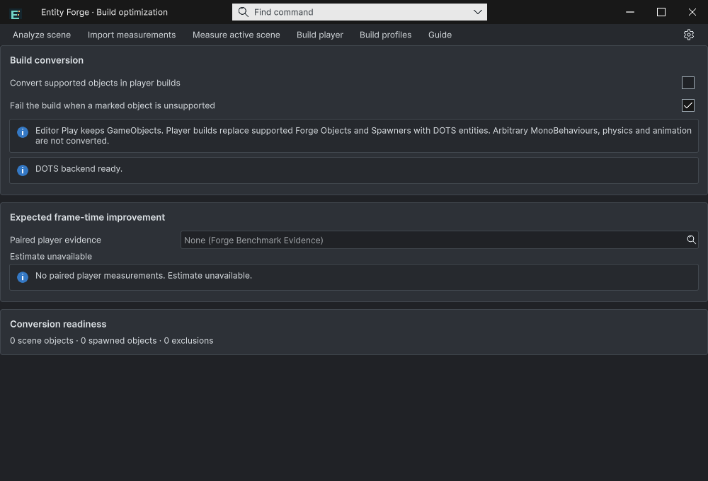
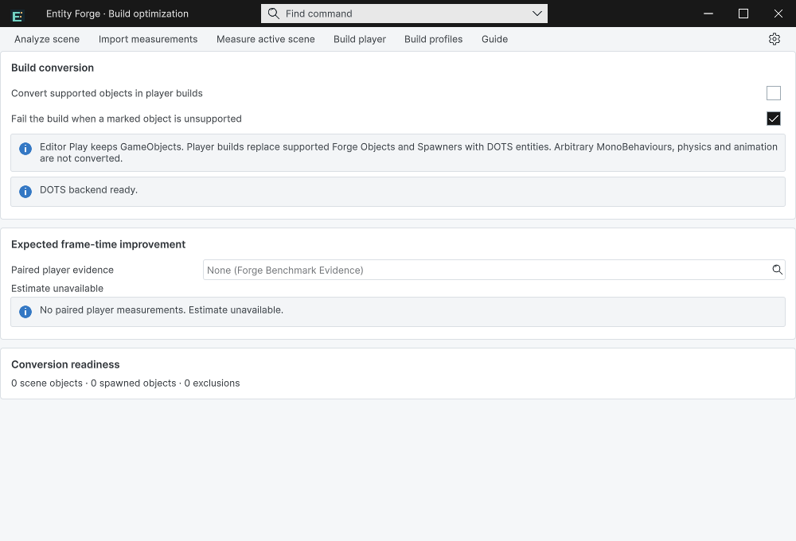
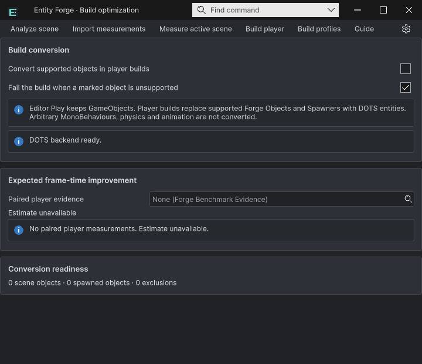
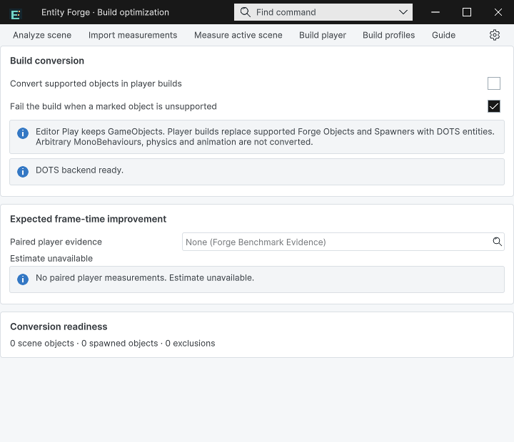

Tracefolio REPORTS & ISSUES
Tracefolio REPORTS & ISSUESEntity Forge 기본 제목줄·탭 노출 수정과 재로드 회귀 검증
종료공통 독립 프레임으로 교체하고 닫기·재열기·반복 Open·실제 스크립트 재로드를 검증했습니다.
작업 결과
Entity Forge 창에 Unity 기본 제목줄과 도킹 탭이 겹쳐 나오던 문제를 수정했습니다. 실제 Unity에서 7개 창 수명 검사와 라이트·다크, 1000px·720px 화면을 확인했습니다.
변경 내용
재현 조건
Windows / Unity 6000.0.83f1 / TurnRoom 프로젝트의 실제 그래픽 에디터
재현 순서
Entity Forge를 기본 EditorWindow 컨테이너로 복구한 뒤 엽니다. 창을 닫고 다시 열고, Open을 세 번 반복하며, 실제 스크립트 도메인 재로드 후 재열기를 실행합니다.
기대 동작
공통 제품 제목줄만 표시하고 Unity 기본 제목줄·도킹 탭은 표시하지 않습니다. 창은 하나만 유지합니다.
실제 동작
수정 전 첨부 화면에서 기본 제목줄·탭과 공통 제목줄이 함께 보였습니다. 첫 회귀에서도 NormalWindow와 customFrame=false가 재현되었습니다. 수정 후 모든 최종 상태는 PopupMenu, customFrame=true, docked=false, windowCount=1입니다.
원인
기존 기본 창을 재사용해 ShowPopup을 호출하는 경로와 개발 QA의 ShowUtility 경로가 있었습니다. OnEnable 검사만으로는 패널 연결 전 검사가 끝나는 경우를 처리하지 못했습니다. 실제 기본 창 복구 재현 JSON으로 확인했습니다.
적용 내용
- 기존 공통 프레임 창만 재사용하고, 기본 컨테이너는 새 독립 팝업으로 이전합니다. 위치·테마·창 ID를 이어받습니다.
- OnEnable에 더해 패널이 연결된 UI 스케줄러에서도 복원 상태를 검사합니다.
- 개발 검증 코드도 제품 Open 진입점을 사용합니다.
- 현재 소스와 일치하는 실제 화면 4개를 기록하고 9개 언어 가이드와 프리뷰 패키지를 갱신했습니다.
검증
- 실제 Unity API 실행 7개 검사 통과: 최초 팝업, 닫기, 재열기, Open 3회 재사용, 기본 창 이전, 실제 스크립트 도메인 재로드, 재로드 후 Open.
- 도메인 a1e551ea54a0472598b2c45a052f45b8 → de1a626d204d4f77ac0f17a0c46cd1d3. 시간 대기만으로 재로드 성공을 주장하지 않았습니다. 재로드 중 패널 준비 전 상태도 보존했습니다.
- 실제 화면 4개를 직접 검사했습니다. 기본 OS 제목줄·Unity 탭이 없고 공통 제목줄 하나만 표시됩니다. 영어 UI이며 모든 번역 배치를 검사했다는 뜻은 아닙니다.
- 4개 어셈블리 정적 컴파일, 9개 가이드의 171개 로컬 링크·이미지·캡처/소스 해시 검사 통과.
- 프리뷰 패키지 325개 에셋의 소스·메타데이터 읽기 대조 통과. 이는 새 Unity 설치 검증을 뜻하지 않습니다.




이미지는 Unity 네이티브 화면을 편집 없이 PNG로 저장한 원본입니다. 각각 73~77KB로 이미 200KB 이하이며 손실 압축·크기 조절을 하지 않았습니다. 수명 검사 · 화면·소스 해시 · 보존한 실패 재현
남은 사항
이번 창 장식 수정·재열기·스크립트 재로드 범위는 완료했습니다. 제품 전체의 새 프로젝트 설치·선택 패널 물리 입력·모든 번역 배치·최종 기능 QA는 기존 제품 메뉴얼에서 별도로 추적합니다. Windows/Unity 6000.0.83f1 외 버전은 이번 검증 범위가 아닙니다. 교훈은 Architecture.md에 패널 연결 후 복원과 기존 컨테이너 재현으로 기록했습니다. 기존 전역 근거 검증 규칙으로 다루므로 전역 지침 중복 추가는 없습니다.
작업 시간
- 제안 시간: 최초 수정 15
30분; 재개 후 마무리 1020분 - 실제로 완료된 시간: 수정·실제 재발 회귀·문서·패키지 검사 완료: 2026-11-01 20:21:17 Asia/Seoul. 최초 19:21:53 이후 중단 구간을 포함한 경과 59분; 이번 재개 20:12:30 이후 9분. 공개 배포 확인은 후속 기록합니다.
- XERJ: 실패 — Xerj.ps1 Status 노드 미실행. Search 복구는 data/node.lock 사용 중으로 실패해 현재 소스 직접 대조와 rg를 사용했습니다.